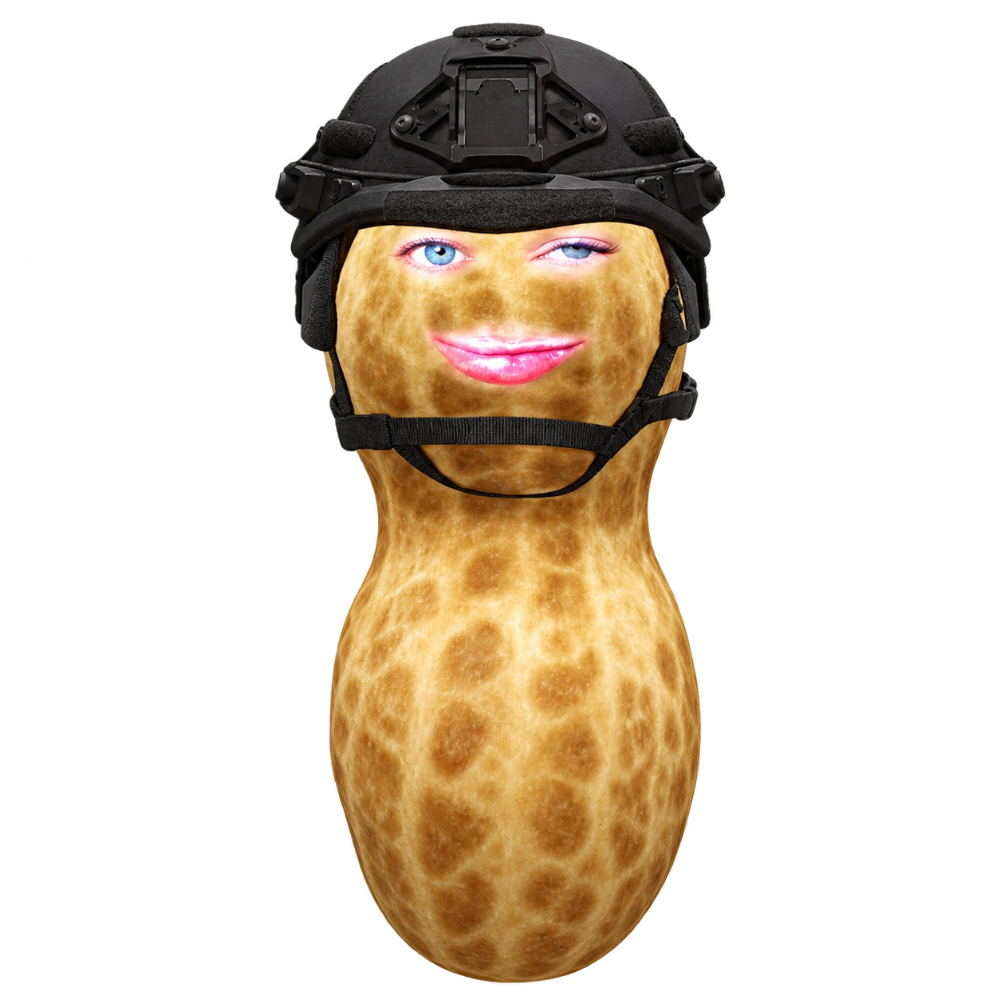

HIGH SCORES
ONLINE · TOP 10
| # | NAME | SCORE |
|---|
Top Nuts
SCORE
HIGH SCORE
Ghost guide
Central ghost house
Orange beard: follows your current tile
Gingy (pink hat): aims four tiles ahead
Blue-haired ninja: flanks with the red ghost
Gamer: sweeps the left half
Lavender: retreats when you get close
Lime: patrols the right half
Yellow: guards the crossings
Blue: aims eight tiles ahead
White: guards nearby power pickups
Teal: approaches from behind